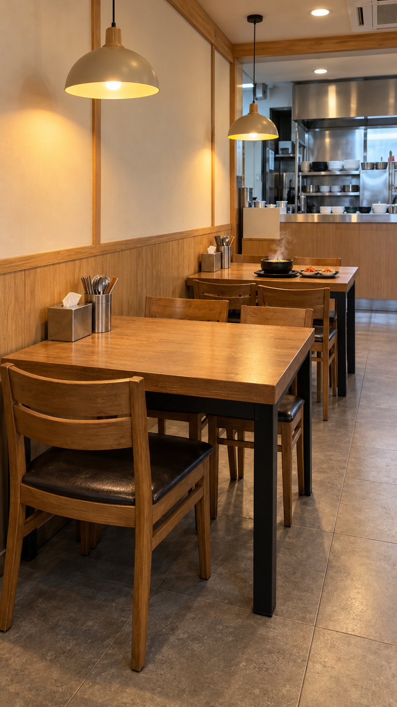
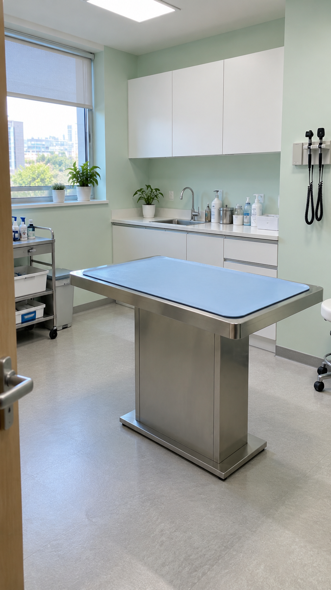

A·C 편 빈 세트 확인
새 장소는 빈 세트 확인 뒤에만 키프레임으로 갑니다(09-25 규칙). B(식당 계산대)는 승인된 «고깃집 계산대» 세트로 먼저 제작합니다.

A. 동네 국밥집 — 벽 쪽 4인 테이블 두 개(앞은 빈 자리 = 도윤이네 자리, 뒤는 뚝배기 한 그릇 = 혼자 드시는 할아버지 자리), 뒤 주방. 글자·로고 없음.

C. 동네 동물병원 진료실 — 가운데 스테인리스 진료대(하늘색 매트, 어른 허리 높이 = 콩이 자리), 건너편 수의사 자리, 앞 엄마·도윤이 자리. 글자·로고 없음.
주소를 아는 사람은 열람할 수 있는 페이지입니다 · 2026-11-22 이후 자동 삭제